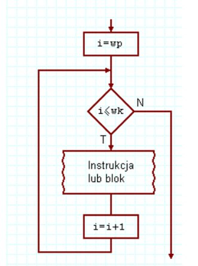
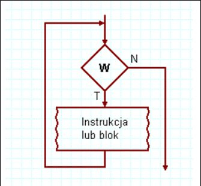
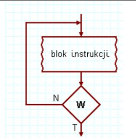

Pętla for jest powszechnie używana do iteracji przez określoną ilość elementów. Składnia pętli for wygląda następująco:

for (zainicjowanie_zmiennej; warunek_kończący_wykonywanie_pętli; zmiana_zmiennej) {
// kod który zostanie wykonany pewną ilość razy
}
Pętla while sprawdza warunek przed wykonaniem bloku kodu. Jeśli warunek jest spełniony, blok kodu jest wykonany. Składnia pętli while wygląda następująco:

while (wyrażenie_sprawdzające_zakończenie_pętli) {
// fragment kodu który będzie powtarzany
}
Pętla do while sprawdza warunek po wykonaniu bloku kodu. Oznacza to, że blok kodu jest wykonany przynajmniej raz, nawet jeśli warunek jest fałszywy. Składnia pętli do while wygląda następująco:

do {
// fragment kodu który będzie powtarzany
} while (false);